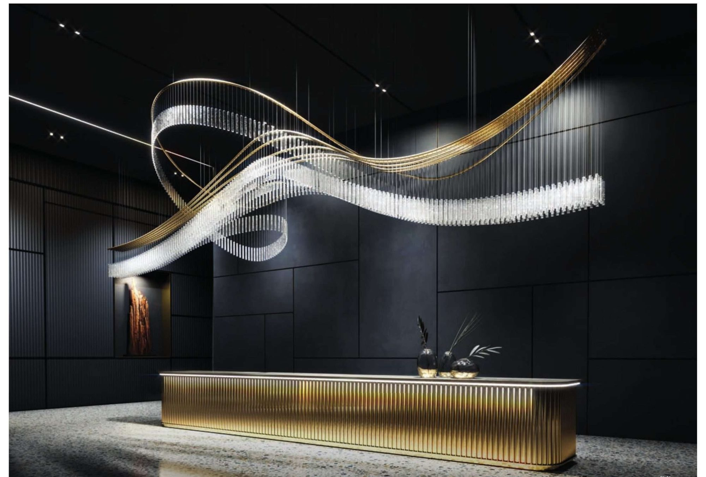
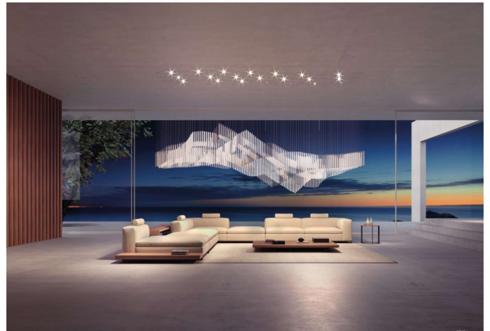

A chandelier is no longer a fixture. In the hands of a couture atelier it becomes the emotional centre of a room — drawn to its architecture, engineered to its light.
A chandelier is the one object in a room that everyone looks up to. In a couture atelier it stops being a fixture and becomes the emotional centre of a space — drawn to the architecture around it and engineered to the exact quality of its light.
At The Stellar Kraft no two chandeliers begin the same way. Each is conceived for one ceiling, one fall of light, one moment of arrival. That is the difference between a product and a commission, and it is the whole of our practice.
Most lighting is designed around the metal and the crystal, with light treated as an afterthought. We reverse the order. We begin with the light itself — its colour temperature, its softness, the way it will pool on stone or dissolve into a double-height void — and we build the form to carry it. The structure exists to serve the glow, never the other way around.
A bespoke chandelier is never chosen from a page; it is drawn against the room it will inhabit for a generation. We study sightlines, ceiling heights, the rhythm of the structure and the materials already in play, so the finished piece feels inevitable rather than added. Our couture lighting collection is not a catalogue to buy from but a vocabulary to begin a conversation.

Behind the romance is relentless engineering. Load paths, suspension, thermal behaviour and serviceability are all resolved before a single component is made. Only then does the craft begin: every weld is ground by hand, every finish is developed to sample, every crystal is set by eye. The discipline is what allows the poetry to last.
Nothing leaves the atelier until it is impossible to improve.
The result is an object that could not be moved to another room without losing its meaning. That is the truest mark of luxury — not cost, but specificity. See where these commissions have landed in our projects, or read how architectural ceilings carry the same idea across the fifth wall.
— The Atelier, The Stellar Kraft
Tell us about the space, the fall of light and the feeling you want to create. We design to it — nothing is taken from a shelf.
Begin a Commission →